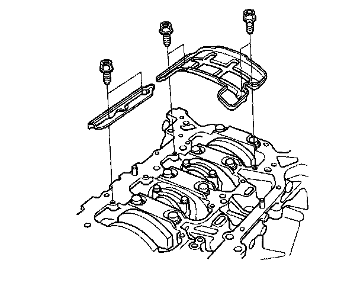
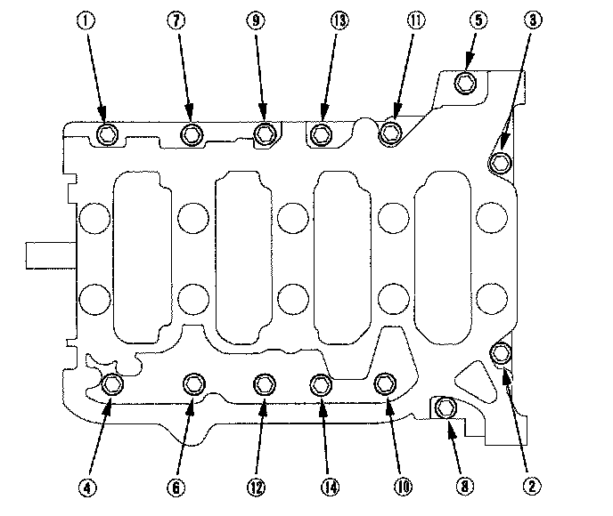
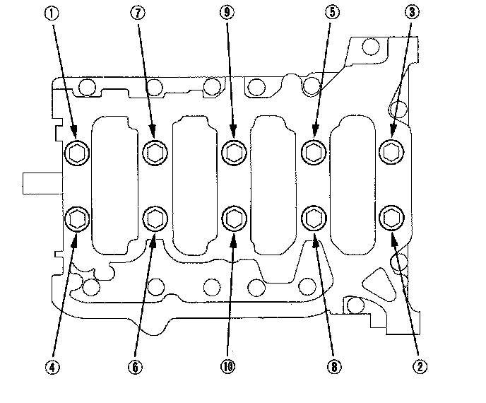
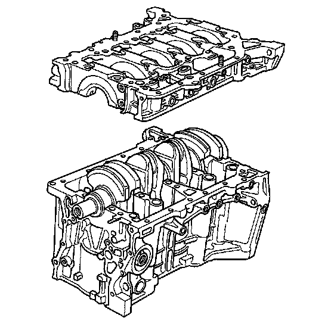
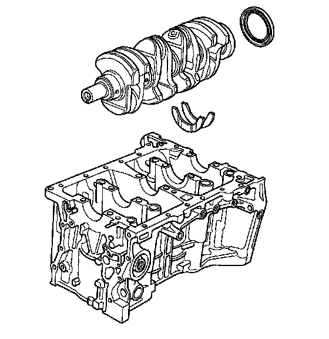
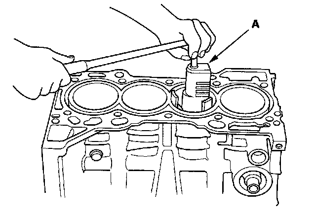
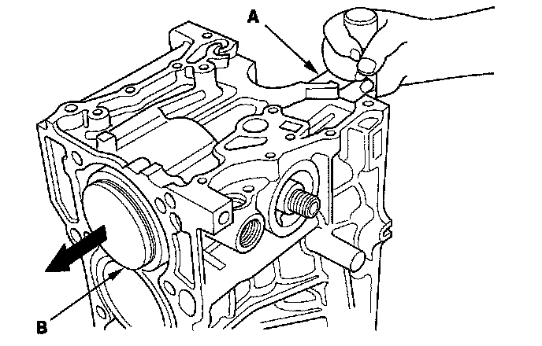

Crankshaft and Piston Removal
Crankshaft and Piston Removal1. Remove the engine assembly.
2. Remove the transmission.
3. Remove the pressure plate, clutch disc, and flywheel.
4. Remove the oil pan.
5. Remove the oil pump.
6. Remove the cylinder head.
7. Remove the baffle plates.

8. Remove the 8 mm bolts in sequence.

9. Remove the bearing cap bolts. To prevent warpage, unscrew the bolts in sequence 1/3 turn at a time; repeat the sequence until all bolts are loosened.

10. Remove the lower block and bearings. Keep all the bearings in order.

11. Remove the rod caps/bearings. Keep all caps/bearings in order.
12. Lift the crankshaft out of the engine. Being careful not to damage the journals.

13. Remove the upper bearing halves from the connecting rods, and set them aside with their respective caps.
14. If you can feel a ridge of metal or hard carbon around the top of each cylinder, remove it with a ridge reamer (A). Follow the reamer manufacturer's instructions. If the ridge is not removed, it may damage the pistons as they are pushed out.

15. Use the wooden handle of a hammer (A) to drive out the piston/connecting rod assembly (B).

16. Reinstall the lower block and bearings on the engine in the proper order.
17. Reinstall the connecting rod bearings and caps after removing each piston/connecting rod assembly.
18. Mark each piston/connecting rod assembly with its cylinder number to make sure they are reused in the original order.
NOTE: The existing number on the connecting rod does not indicate its position in the engine, it indicates the rod bore size.